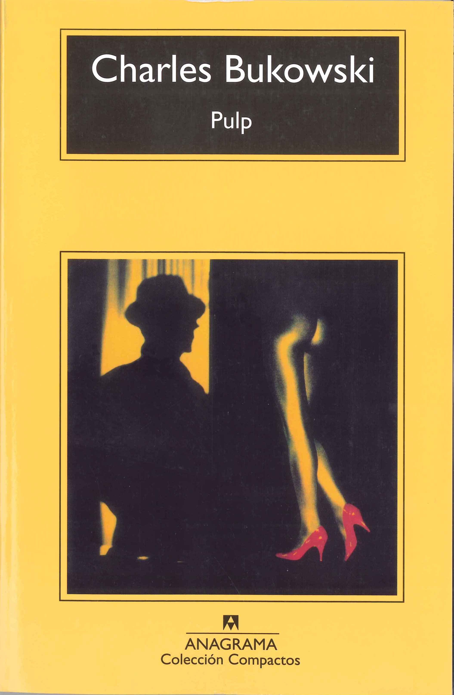
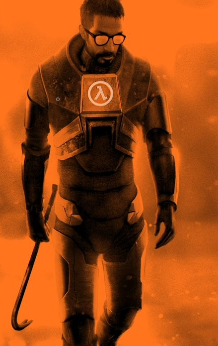
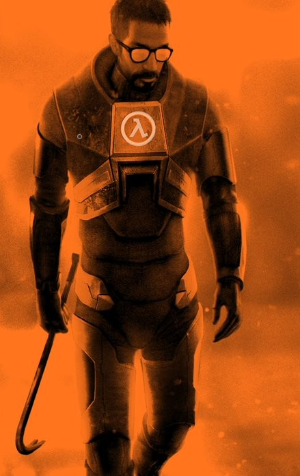

Welcome to my personal page!
This is my personal page, in which you can find information about me, my academic formation, my favorite Youtube videos, and links to different sites that I like.
Videos and music that I like
I always used to like watching and reading a long variety of things in my day-to-day. I also like various Youtube channels and videos.
My favorite videos
There are two of my favorite videos:
Some Youtube Channels that I like
Here are some channels that i usually watch or that I like a lot:
About me
I am a penultimate semester student of Computer Engineering at Uniandes. I like to spend time on the internet searching for various kinds of stuff, and I like working hard to learn about my major when it is required. Recently, I started to spend a lot of time seeing Twitch and Youtube (a guilty habit, maybe!). I also like to play distinct types of videogames (like RPG's or SandBox) and watching series of suspense or drama.
| Age | Birthdate | Nationality | Place of birth |
|---|---|---|---|
| 22 | Jan 13 1999 | Colombian | Bogotá DC, Colombia |
Project, experience and Leadership
- Mid-career project at Uniandes: Mobile App which purpose was to help elder people.
-
- Worked with a team to ideate and develop an IT solution
- Developed a mobile application together with a work team
- I developed soft skills like creativity and teamwork
- Teleperformance, Semibilingual Call Center Agent:
-
- Worked with a team in order to reach goals of productivity and quality as well as to review and improve these indicators
- Participated in team meetings to verify the progress of the group
- Dealt with people to help them with a variety of issues that were related to their work, following a knowledge base
- The Church of Jesus Christ of Latter-day Saints, Religious teaching and office work
-
- Helped with labors related with the finance and management of a ward of the church
- Collaborated with other people reviewing reports and statistics

Other things that I like
Some of my favorite books
Some of my favorite videogames
 

One of my favorite songs - Noicanicula, a Bogotá's Rap Classic!
My academic formation
- IED San Francisco, "High School" degree (Obtained in 2015)
I remember my school days with a smile, these were good days. San Francisco was for me was a nice place to live these times of my life. Also, I managed to be the best ICFES exam the year in which I became graduated.
- Uniandes, Computer Science (2016 - currently)